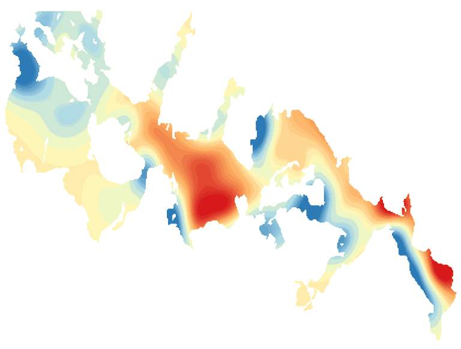

LakeScope › ND
Devils Lake today
Updated 2026-11-14 - Atlas Labs
Slightly murky, 43°F water, level steady, 1 ft above normal, windy Saturday (24 mph SE).
Water level
1451.16 ft
USGS gauge 05056500 - 2026-11-14
7-day trend: steady (-0.07 ft). Compared with normal for this date: +1.0 ft (same weeks, 2016-2025).
Water clarity and algae
Slightly murky Last clear view: over a week ago. 2 cloudy passes since.
Surface temperature
43°F
seen from space on 2026-11-11

Ice
Open - 0% ice cover
Estimate from weather and satellite, not a measurement. Check the ice yourself before going on it.
Weather, next 3 days
| Day | Sky | High / low | Wind | Rain |
|---|---|---|---|---|
| Saturday | Mostly Sunny | 41 / 34°F | 24 mph SE | 0% |
| Sunday | Sunny | 48 / 38°F | 23 mph S | 0% |
| Monday | Mostly Sunny | 51 / 39°F | 15 mph SSW | 0% |
Sunrise 07:41 - sunset 16:58 - Waxing crescent. National Weather Service.
Get the LakeScope app: alerts and the 3-D view of Devils Lake